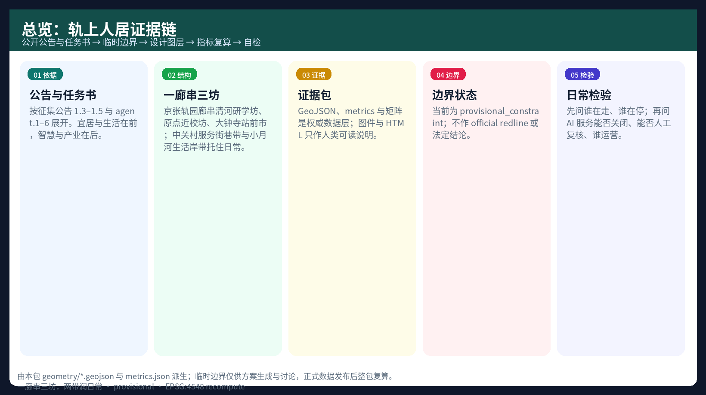
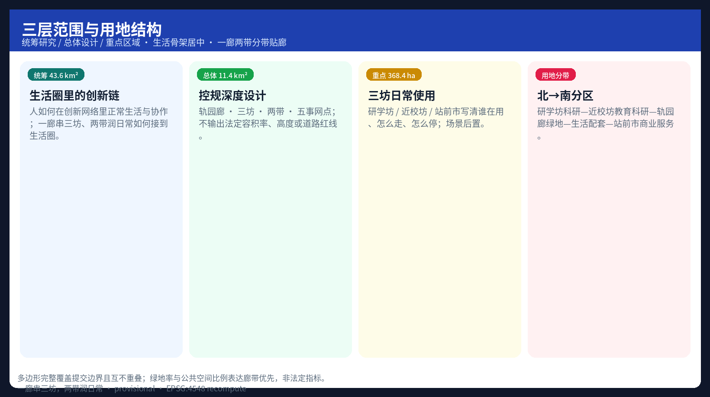
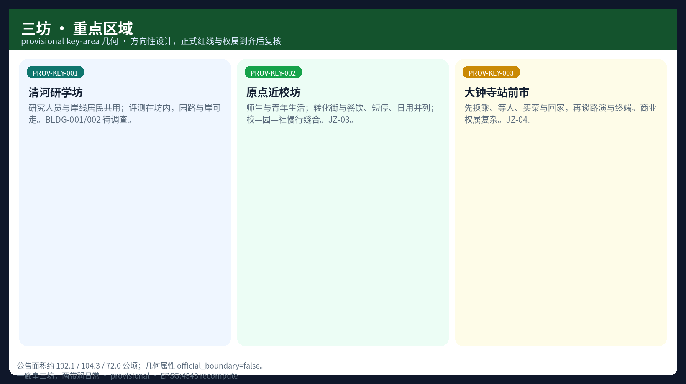
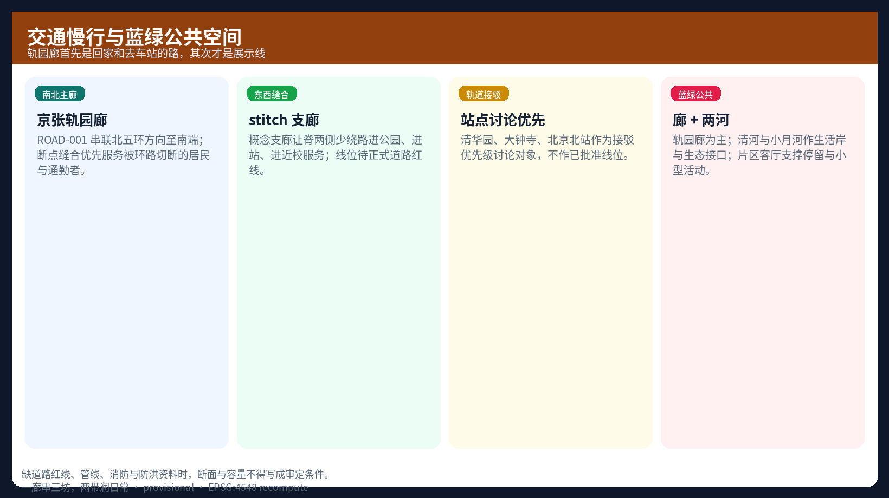
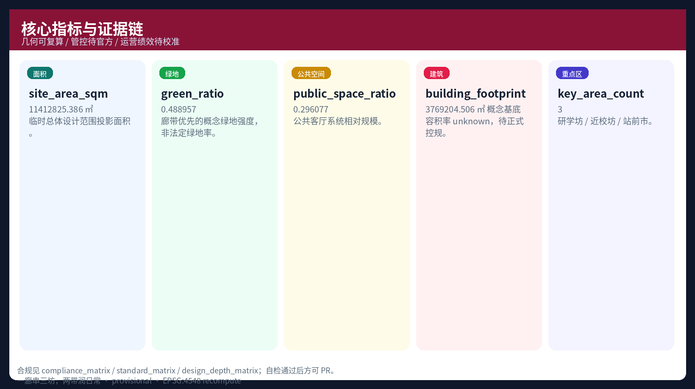

轨上人居 · 京张有机更新AI创新带
以人居环境科学与有机更新为判断标准，提出「轨上人居」：先把京张铁路遗址公园整理成可走、可停、可汇合的生活主廊（京张轨园廊），再让众智园·清河研学坊、原点近校坊、大钟寺站前市的上班、上学、回家与邻里往来接回同一条日常路径；中关村服务街巷带与小月河生活岸带托住办事与河岸生活。产业与智能服务贴在廊与坊里，说明用途、可关闭、有人管。边界 provisional，指标可复算；空间落地均为概念建议。
轨上人居 · 京张有机更新AI创新带
方案主名称：轨上人居。英文副译：Habitat on the Rails（对内可不使用 HOR 作主识别）。副题：百年京张 AI 创新带有机更新城市设计概念建议——主语是人的日常路径，产业与智能服务是附句。
本包沿北五环以南、清华园、大钟寺至北京北站一带。核心问题不是“能布置多少 AI”，而是：上班、上学、回家、买菜、接孩子、散步、等人的人，怎样重新走在同一条清楚、连续、有遮阴和座椅的路上。判断依据来自人居五要素、有机更新与人本智慧城市论述；场地按环境、出行、使用人群与历史并行梳理。命名参考前海等国内规划常见的中式结构词——廊、坊、带、客厅、门户——用地貌与生活词说空间，不用“全栈核 / 场景翼”当地名。
边界声明：文中空间落地建议均为概念建议、参考方案或可供专业团队继续研究的材料，不替代正式规划，不构成政府审定结论、投资承诺或工程可行性结论。
设计依据与资料清单
正式依据以《百年京张 AI 创新带城市设计国际方案征集》公开公告与面向智能体任务书为准，机器可读边界来自 brief/site-package/ 中的临时粗略边界、枚举、指标区间、标准本地参考，以及 data/source_registry.json 来源 来源。写作前已阅读 design_brief.json、agent_taskbook.json、allowed_design_space.json、data/processed/agent_fact_pack.md 与 missing_data_checklist.csv，先区分已能确定的事项与仍须待补的资料，再进入空间设计 来源。
场地综合按 site-planner 并行处理四类信息：环境（蓝绿结构、清河与小月河线索）、出行（轨道站点、环路割裂、慢行断点）、使用人群（高校师生、研发人员、居民、访客）、历史与地方性（京张铁路、清华园火车站、中关村创新文化），再归纳机会、约束与建议 来源。价值判断按前海式纪律：宜居与生活在前，智慧与产业在后。先问人居五要素是否更完整、居民是否受益、更新是否小规模渐进；再问技术如何服务通勤、照料与交往。不先问能布置多少 AI 装置 来源。

当前仓库中尚无官方精确红线。本包采用 provisional_boundaries.geojson 派生总体设计范围与三处重点区，属性为 geometry_role=provisional_constraint、official_boundary=false 空间数据 来源。临时边界只用于生成、可视化与 intake 自检；组织方数据缺口本身不阻断内容评分，但精确面积、法定控制与实施结论须在 official polygons 到齐后整包复算 指标 深度。
资料使用边界如下：
- formal 任务依据：公告文字四至与面积、agent 任务书、专业标准原则；
- provisional only：临时 polygon 及其派生面积与拓扑；
- 仍缺：official redline、地块权属、控规强度、道路红线、市政管线、文保控制线。
完整来源、指标、标准与设计深度索引见 sources.json、metrics.json 与三个矩阵文件，正文不重复抄录。
三层范围工作框架
方案按公告确定的三层范围组织工作。每一层都按“问题—判断—图层—指标—风险”展开，避免只在愿景层停留 深度 标准。
| 层级 | 面积（公告） | 核心问题 | 本方案回答 | 证据 |
|---|---|---|---|---|
| 统筹研究范围 | 43.6 km² | 人如何在创新网络里正常生活与协作 | 经生活圈检验的创新链；一廊串三坊、两带润日常 | compliance / standard matrices |
| 总体设计范围 | 11.4 km² | 居住、通勤、更新、产业如何合在一处 | 轨园廊 · 三坊 · 两带 · 五事网点 | 空间数据 |
| 重点区域范围 | 368.4 ha | 三片是否达到详细设计深度 | 清河研学坊 / 近校坊 / 站前市的日常使用与织补 | 空间数据 |

总体概念「轨上人居」：把百年京张铁路遗址公园理成一条南北可走、可停、可汇合的生活主廊——称京张轨园廊（亦称人居脊）。廊不是新画红线，而是把科研、教育、居住与服务重新接到同一条日常路径上 深度。
对外一句结构（中式数字格局，参考前海“一心一带”类写法）：一廊串三坊，两带润日常。任务书中的「AI 创新带」作项目响应名保留；空间主品牌用人居中文，不用英文缩写当地名。
空间结构：
1. 一廊（轨园廊）：京张遗址公园上的南北慢行与停留主线——回家与去车站的路，文化展示与可关闭的智能服务贴在廊上，不占满整条公园。 2. 三坊（生活锚点）：众智园·清河研学坊、原点近校坊、大钟寺站前市。用坊/市说场所，不用“全栈核 / 开源核 / 智能核”。 3. 两带：中关村服务街巷带（办事、咨询、小团队落脚）、小月河生活岸带（散步、社区活动，开放测试后置）。 4. 五事网点（人居五要素的白话）：出行与汇合、园岸与遮阴、邻里与议事、生活配套、可关闭的便民信息点。 5. 三期：南段先顺回家与换乘 → 中段织补近校生活与转化 → 北段园界开放与安静策略并行。
人在廊上怎么过一天（概念叙述，非精确时耗）：早高峰沿廊与东西支巷去站点，先问过街是否连续；白天廊上以散步、坐歇、路过为主；放学下班时段近校坊与社区界面承接短等与避雨；夜间站前回家路径要有连续照明与人气界面；周末市民使用优先于产业活动周占路 来源 标准。
该结构仍响应三大定位与五大功能；场景卡与 agent 任务在后文展开，且生活向场景与产业向场景分栏书写。
统筹研究范围产业与未来城市研究
统筹层不新增伪精确红线，只回答一个问题：海淀如何在京津冀与全球 AI 网络中，把“高校策源—开源协作—企业转化—公共体验—国际传播”做成可感知的城市形态，而不是只写产业口号 深度。
命名与视觉识别（agent.1）
命名原则：结构图上先出现廊 / 坊 / 带 / 站前 / 客厅；产业与 AI 写在组团说明与场景层。参考前海等地“湾、廊、街坊、会客厅”的中式构词，京张用轨、园、河、坊、市置换。
| 层级 | 中文 | 英文副译 | 使用场景 |
|---|---|---|---|
| 主品牌 | 轨上人居 | Habitat on the Rails | 对外传播；不以 HOR 作导视主名 |
| 总结构 | 一廊串三坊，两带润日常 | One corridor, three quarters, two belts | 总图标题、板式 |
| 主廊 | 京张轨园廊 | Jing-Zhang rail-park corridor | 慢行、停留、文化 |
| 三坊 | 清河研学坊 / 原点近校坊 / 大钟寺站前市 | Research quarter / Near-campus quarter / Station market | 片区识别 |
| 两带 | 中关村服务街巷带 / 小月河生活岸带 | Service streets / River living belt | 日常办事与河岸生活 |
| 节点 | 片区客厅、站城门户 | Living room / Station gateway | 停留与接驳 |
Logo 方向：双轨剖面转成连续步道截面；节点对应五事网点；色系为轨道深灰、公园绿、海淀科研蓝。禁止未授权商标与肖像。界面不堆“AI”字样；智能服务出现在导则说明里，不进店招式地名 来源。
全球 AI 创新生态案例（agent.2）
下表只提取可转化的机制，不照搬形态或规模。
| 案例 | 可转化机制 | 在京张的概念落点 |
|---|---|---|
| 波士顿 Kendall Square | 近校转化与人才密度 | AI 原点社区 |
| 多伦多 MaRS / Vector 周边 | 研究、孵化与企业服务同区 | 众智园—中关村服务翼 |
| 伦敦 Knowledge Quarter | 知识机构与公共空间缝合 | 轨园廊上的公共客厅 |
| 巴黎 Station F 模式 | 大规模创业服务综合体 | 站前市中的会客与发布（不替代市井穿行） |
| 新加坡 one-north | 园区生活一体化 | 近校坊与生活配套带 |
| 深圳前海（总规话语） | 产城融合、职住、慢行、生活圈；廊/带/街坊命名 | 宜居在前、智慧在后；一廊两带写法 |
| 杭州未来科技城部分做法 | 场景开放与城市运营 | 小月河生活岸带的开放日制度 |
| 中关村既有开源与硬科技网络 | 本土 IP 与资本服务 | 中关村服务街巷带 |
土地、空间、产业、资金、人才、算力、数据、场景等要素机制，一律写成可供专业团队与政策研究继续深化的选项清单，不编造投资额、产值或财政承诺 来源。
未来城市形态判断
人工智能会改变工作单元粒度、协作半径与公共服务可达性，但不会取消街道生活。本方案主张：
1. 先生活骨架，后产业填色：轨园廊、站城门户、河岸与街巷先连续，再布置转化与测试功能。 2. 产城与职住接口写进片区（概念层面）：就业节点与近校片区旁保留居住与生活服务界面，不单做纯办公走廊。 3. 慢行锚定站点：以轨道站点为核心讨论步行连续，而不是先铺“智慧步道”标签。 4. AI 从属：服务写清对象、落点、可关闭、人工复核；反对不可审计的监控场 来源。
总体设计范围城市更新与控规深度城市设计
总体设计范围对应公告约 11.4 平方公里。本包临时投影面积约 11412825.386 ㎡ 指标。设计深度对标控规层面的城市设计：用地结构、公共空间、慢行与轨道接驳、更新项目逻辑、风貌与实施分期。正文不给出容积率、建筑高度、道路红线或地块拆改留的法定结论 标准 深度 深度。
用地结构采用南北分带，中间保留轨园廊（人居脊）——生活骨架居中，产业与服务分带贴廊：
1. 北段科研（0802）——清河研学坊（研发评测在坊内，清河岸线公共）。 2. 中北教育科研（0804）——原点近校坊（转化与青年生活并列）。 3. 中段公园绿地（1401）——京张轨园廊。 4. 中南社区服务（0702）——生活配套与便民首层（与转化街同级叙述）。 5. 南段商业服务业（05）——大钟寺站前市（换乘、市井、会客共用）。
分类遵循国土空间用途分类子集 标准。多边形完整覆盖提交边界且互不重叠 空间数据。绿地率约 0.4890、公共空间比例约 0.2961，用来表达“脊带优先”的人居取向，不是法定绿地率指标 指标 指标。
更新策略遵循有机更新：优先织补界面、缝合慢行、激活首层与公共空间。对权属不清、结构不明的建筑只标注 pending_survey，不写大拆大建叙事 深度 来源。建筑概念基底合计约 3769204.506 ㎡，仅用于讨论空间供给类型 指标 空间数据。
重点区域详细设计
三处重点区均使用 provisional key-area 几何。公告面积分别为 192.1、104.3、72.0 公顷 空间数据 指标。众智园、AI 原点社区与大钟寺分别对应 PROV-KEY-001/002/003，达到重点区域详细设计深度要求 深度。因几何为临时约束，下列结论均为方向性设计，正式红线与权属到齐后需复核。

众智园 · 清河研学坊（AI 自主创新加速区）
谁在用：研究人员、评测与标准工作者、清河一侧散步的居民与访客。 定位：花园型研学坊——研究、评测、展示与议事在坊内完成，岸线与园路对城市保持可走；控制对周边居住的噪声与夜间灯光干扰。 日常使用（概念）：高峰出入口避免正对住宅门前；居民穿行权不被围成死胡同；开放测试集中在约定界面，敏感时段收束。 空间动作：清河界面作蓝绿廊与公共岸；标准治理与安全评测的公共界面；绿色空间作室外公共厅，而非整园产业展场。 产业 / 场景：模型测试、标准工作坊、安全沙盒（S02）等，后置于日常可达。 建筑：BLDG-001/002 概念基底，pending_survey。 交通：内部慢行优先；对外微循环待正式道路条件。
原点近校坊（北京 AI 原点社区）
谁在用：师生、青年租住者、转化团队、接送与短停的家属、周边居民。 定位：近校生活坊——缩短实验室到街区的距离，同时把餐饮、日用、短时等候、可负担生活方向与转化功能写在同一套首层逻辑里。 日常使用（概念）：课间与下班的短停、避雨、等人；东西向缝合服务“进站、回住、回宿舍”；开源发布与路演高峰与生活时段错峰。 空间动作：校区—园区—社区慢行缝合；原点发布厅、成果转化街；人才服务与生活配套并列，不把生活写成转化街的附属词。 产业 / 场景：开源协作、成果发布、知产法务入口、教育体验（S01/S07）。 建筑：BLDG-003/004 概念楼群。 关键风险：校园数据与成果须授权；不得把校园内部管理写成默认可公开运营。
大钟寺站前市（大钟寺 AI 产业聚集区）
谁在用：换乘乘客、周边居民回家与买菜的人、企业访客、夜间活动参与者。 定位：站前市——先把出站后的步行、等人、穿行、短购说清楚，再谈路演与终端展示。 日常使用（概念）：四象限步行服务换乘与过街；活动季预留非购票、非参会的穿行与短等；夜间照明连续；雨天遮挡在概念层提出，待工程条件深化。 空间动作：站城一体接驳、路口四象限连通、站前会客厅（国际路演）、终端与内容展示贴界面布置。 产业 / 场景：终端展示、数据要素会客（S08）、路演、夜间公共文化。 建筑：BLDG-005/006 概念楼群；既有商业更新只提方法，不指定拆除企业。 关键风险：商业权属复杂，须单独清权与实施主体研究。
| 片区 | 日常主语 | 东西缝合 | 南北角色 |
|---|---|---|---|
| 清河研学坊 | 研发者 + 岸线居民 | 园区—清河—居住 | 北锚：可走的园与可管的评测 |
| 原点近校坊 | 师生与青年生活 | 校园—街区—轨道 | 中锚：转化与生活同街 |
| 大钟寺站前市 | 换乘与邻里 | 站城—商业—社区 | 南锚：回家路与会客厅 |
AI 创新生态、人才画像与 AI+ 场景
AI 在本方案中是嵌入廊、坊、带的服务能力，不是贴在建筑表面的装饰层。场景卡对内保留编号以利合规；对外优先用生活句命名。每个场景须写清：服务谁、落在哪、数据从哪来、最小化采集、人工复核、谁运营 来源 深度。
生活向（先写）：轨园断点导路（S04）、清河岸与公共停留（S06）、社区便民样板街（S09）、市民活动与噪声管控（S10）、事件复盘不监控个人（S12）。 产业向（后写，且服务日常）：发布厅、沙盒、转化街、会客、配送试点等。
用户画像（不少于 5 类）
| 画像 | 核心诉求 | 空间响应 | 隐私与治理边界 |
|---|---|---|---|
| 开源开发者 | 发布、协作、声誉 | 原点发布厅、夜间协作角 | 不采集个人轨迹；仅聚合统计 |
| 初创团队 | 低成本试验、咨询入口 | 研学坊共享测试、标准咨询 | 算力与数据另行授权 |
| 企业访客 | 展示、洽谈、招聘 | 站前会客厅、接驳 | 企业标识须清权 |
| 周边居民 | 通勤、买菜、休闲、低扰动 | 轨园廊、便民首层、河岸 | 画像禁用于商业推荐 |
| 高校师生 | 上课、转化、跨校协作 | 转化街 + 生活短停界面 | 校园与论文数据需授权 |
| 带孩子家庭 / 照护者 | 接送、短停、无障碍连续 | 遮阴座椅、平缓过街、避雨点 | 儿童高频路径不做个性化追踪 |
| 国际研究者 | 短居、交流、双语寻路 | 站前与客厅节点 | 入境与活动合规 |
AI 场景卡（不少于 10 张，含不少于 3 张产业测试验证）
| ID | 场景 | 空间 | 类型 | 人工复核 |
|---|---|---|---|---|
| S01 | 开源发布厅 | 原点社区 | 生态 | 内容审核人工终裁 |
| S02 | 安全治理沙盒 | 众智园 | 产业测试验证 | 红队与合规双审 |
| S03 | 廊上便民服务亭（端侧能力在后台） | 轨园廊节点 | 新基建概念 | 能耗与安全巡检 |
| S04 | 轨园断点导路 | 遗址公园 / 轨园廊 | 交通 | 断点识别人工确认 |
| S05 | 站前会客厅 | 大钟寺站前市 | 产业服务 | 活动安全方案 |
| S06 | 清河低碳创新廊 | 众智园北 | 公共空间 | 生态敏感期限制 |
| S07 | 近校成果转化街 | 原点 | 转化 | 知识产权人工流程 |
| S08 | 数据要素会客厅 | 大钟寺 | 产业测试验证 | 授权链可审计 |
| S09 | 社区便民样板街 | 社区界面 | 生活 | 医疗 / 法律人工兜底 |
| S10 | 全球 AI 活动周路线 | 全带 | 运营 | 交通与噪声管控 |
| S11 | 园区低速送物巷 | 园区内部道路概念 | 产业测试验证 | 人优先，冲突时人工接管 |
| S12 | 公共安全运营复盘舱 | 活动节点 | 治理 | 仅事件复盘，不做个人监控 |
场景与空间对应关系：S02、S08、S11 绑定众智园与大钟寺测试界面；S01、S07 绑定原点；S04、S06、S10 绑定人居脊与公共空间图层 空间数据 空间数据。绿地支撑见 green_space 图层。
用地、建筑规模与拆改留方案
用地以完整拓扑分区表达，不留未标注空洞 空间数据 标准。建筑规模与强度说明如下：
- 可复算：概念建筑基底面积 指标。
- 未知：容积率、建筑高度、建筑密度——
floor_area_ratio保持 unknown，等待正式控规 指标。 - 拆改留：全部建筑对象标记
pending_survey。方法是“调查—分类—小规模试点—评估”，在无现状数据时不输出拆除清单 深度 深度。
风貌控制分三层：官方管控（待补）、设计建议（人居脊界面、首层透明、屋顶可读）、待确认（文保与控高）。京张历史文化元素进入导视与公共艺术组件库，但不伪造文物保护线。
交通、轨道、市政与公共服务设施
交通策略围绕四点：能到达、能慢行、减少穿越冲突、可接驳轨道。轨园廊首先是回家和去车站的路，其次才是展示线 深度。

- 南北主廊：ROAD-001 京张轨园廊，串联北五环方向至南端；断点缝合优先服务被环路切断的居民与通勤者 空间数据。
- 东西缝合：多条 stitch_connector 概念支廊，让脊两侧的人少绕路进公园、进站、进近校服务。
- 轨道一体化：清华园、大钟寺、北京北站等节点作为接驳优先级讨论对象，线位与红线待正式资料。
- 停车与非机动车：建议采用“边缘停车 + 脊内慢行优先”的原则清单，不做泊位精确工程设计。
- 市政与新基建：端侧算力、分布式能源、智慧杆件与传统市政的融合，列为待深化专题 深度。
缺少道路红线、管线、消防与防洪资料时，所有断面与容量结论不得写成审定条件 空间数据。
蓝绿空间、公共空间与城市风貌
蓝绿骨架以京张遗址公园人居脊为主，清河与小月河作为两翼生态与场景接口 深度 标准。公共空间系统由站点广场与片区公共客厅构成，支撑日常交往、展示、小型活动与参观路线 空间数据 指标。
AI 朝圣地标与荣誉展示（agent.4，不少于 3 处）
| 地标 | 位置概念 | 意义 | 组件 |
|---|---|---|---|
| 轨园中段休息廊（双轨时间廊） | 轨园廊中段 | 先可坐可歇，再谈历史与开源对照 | 座椅、遮阴、轨道截面、时间轴 |
| 原点发布厅侧星图墙 | 近校坊 | 贡献与项目聚合展示 | 可扩展模块墙 |
| 研学坊治理碑 | 清河研学坊 | 安全、标准、可审计（低矮可触） | 不做巨型打卡塔 |
| 站前会客门廊 | 站前市 | 交往与发布，不挡换乘穿行 | 可拆卸展陈 |
荣誉展示体系分个人、团队、开源项目、公共贡献四类徽章；展示数据默认聚合，并允许退出。公共空间组件库包括：可移动座椅、遮阴、供电与弱电接口、无障碍坡道、双语导视、可关闭传感杆。
文化叙事（agent.5）
叙事主线：从轨到城，从城到人。京张铁路带来近代工程现代性，中关村带来创新文化；智能服务应回到可走的公园、可进的街坊、可回的站前。导视用轨距线、站名字体演化、街巷地名，少用英文缩写角标。国际传播一句：A walkable living corridor along the old Jing-Zhang railway, stitching research, campus-side life, and the station district into everyday routes. 禁止歪曲历史，也不把文化仅作科技装饰。
更新项目清单、实施政策与分期计划
| 编号 | 项目 | 类型 | 依赖 | 证据 |
|---|---|---|---|---|
| JZ-01 | 人居脊慢行断点缝合 | 公共空间 / 交通 | 道路与桥下空间条件 | 空间数据 |
| JZ-02 | 众智园清河创新界面 | 蓝绿 / 展示 | 蓝线与防洪 | 空间数据 |
| JZ-03 | 原点成果转化街 | 更新 / 产业服务 | 权属与首层 | 空间数据 |
| JZ-04 | 大钟寺站四象限步行 | 站城一体 | 轨道与交叉口 | 空间数据 |
| JZ-05 | 端侧算力与公共服务节点 | 新基建 | 能源与安全 | assumptions |
| JZ-06 | 全球 AI 活动周公共路线 | 运营 / 品牌 | 活动许可 | 空间数据 |
| JZ-07 | 开源星图墙与荣誉体系 | 公共文化 | 版权与隐私 | agent.4/5 |
| JZ-08 | 机器人低速配送试点廊 | 产业测试 | 道路权属与安全 | S11 |
分期见 空间数据 深度 深度：
1. 一期（南段）：先让南端回家与换乘更顺——慢行试点、站前四象限步行、公共体验；活动路线让路给日常穿行。 2. 二期（中段）：近校坊织补——转化街与生活配套首层并列推进；东西缝合接校、接站、接住。 3. 三期（北段）：研学坊生态与长期运营；同步园界开放性与居住一侧安静策略。
全球活动与长期运营（agent.6）
| 模块 | 频率概念 | 运营对象 | 转化路径 |
|---|---|---|---|
| 京张开源周 | 年度 | 开发者 / 高校 | 贡献 → 展示 → 协作 |
| 治理沙盒公开日 | 季度 | 企业 / 研究者 | 测试 → 标准对话 |
| 轨园廊市民日 | 双月 | 居民 / 家庭 | 走断点、提意见、家庭使用；与开源周、路演季并列，不是点缀 |
| 国际路演季 | 半年 | 企业 / 投资 / 媒体 | 展示 → 对接（非承诺招商） |
| 开发者社区 | 持续 | 开源组织 | 声誉体系与 mentorship |
政策建议清单：更新统筹、公共空间许可、数据最小化与公开算法说明、场景开放日制度、知识产权服务窗口。上述内容均非已确定的政府安排。
指标体系、面积复算与合规矩阵

| 指标 | 状态 | 值 | 含义 |
|---|---|---|---|
| site_area_sqm | known | 11412825.386 | 临时总体设计范围投影面积 |
| green_ratio | known | 0.488957 | 人居脊绿地优先的概念强度 |
| public_space_ratio | known | 0.296077 | 公共客厅系统相对规模 |
| building_footprint_area_sqm | known | 3769204.506 | 概念建筑基底 |
| floor_area_ratio | unknown | — | 待正式控规 |
| key_area_count | known | 3 | 三处重点区 |
指标分三类：几何可复算、管控待官方、运营绩效待校准 深度。绿地比例用来支持日常步行与停留；公共空间比例用来支持交往与展示；建筑基底用来讨论产业与生活空间供给类型，而不是审定建设规模。合规矩阵覆盖公告 1.3–1.5 与 agent.1–agent.6，详见 compliance_matrix.json、standard_matrix.json、design_depth_matrix.json。
风险、版权与合规说明
主要风险包括：provisional 边界几何误差；缺权属与控规导致无法做拆改留；文保与生态线未入库；AI 场景若越权采集将损害公众信任。对应假设见 assumptions.json（A-CONTROLS-001、A-BOUNDARY-PROVISIONAL、A-HABITAT-KERNEL）深度。
版权：图件、PDF、HTML 由本 agent 生成；字体为系统 Noto CJK（OFL，不随包再分发字体文件）；不使用未授权商标、肖像与论文图像。双语包为 proposal.md（zh）与 proposal.en.md；HTML、PDF 与图件提供语言副本。HTML 离线、无 CDN、无追踪。版权声明见 report/copyright_statement.md。
本方案不声称官方批准、审定控规、最终建设规模或实施保证。最终判断属于人类评审与专业团队。
参考资料
- 《百年京张 AI 创新带城市设计国际方案征集》公开公告与面向智能体任务书
- brief/site-package 中的 design_brief、agent_taskbook、provisional_boundaries
- data/source_registry.json、data/processed/agent_fact_pack.md 及相关 CSV
- Chinese-urbanplanner-masters 中的人居与有机更新论述；skills-for-architects site-planner 工作流
- 完整机器索引：
sources.json、metrics.json、三矩阵与 geometry/* - 入口依据 来源 来源 来源